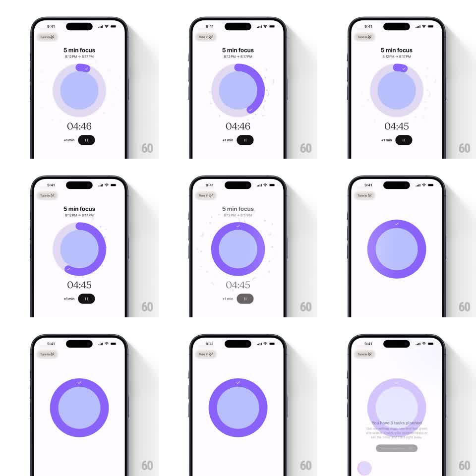

Media
Frame-by-frame

Rebuild this interaction 1:1: Tiimo's circular swipe-to-finish - dragging around the focus timer's ring fills it with a purple progress arc, and completing the circle melts the timer into the task summary screen.

Rebuild this interaction 1:1: Tiimo's circular swipe-to-finish - dragging around the focus timer's ring fills it with a purple progress arc, and completing the circle melts the timer into the task summary screen. ## Integration Integration: stack-agnostic spec - springs given as stiffness/damping, timed motions as duration + curve; map every value to your framework and animation library of choice. ## Scene Tiimo's "5 min focus" timer: session label and time range up top, a large circular ring at center (a pale lavender disc inside a light track ring), the "04:46" countdown beneath it, and "+1 min" and pause controls below. Dragging around the ring fills a thick purple arc; when the arc completes the full circle with a checkmark at the top, the timer UI dissolves into the summary: "You have 3 tasks planned" with a button. ## Motion spec Pattern: circular drag-to-complete, gesture-driven. - The drag maps angle to progress 1:1: the purple arc sweeps clockwise from the top, its end cap rounded, tracking the finger around the ring. - A floating label chip rides the arc's tip; crossing ~90 percent, the ring pulses (scale 1.03, 200ms) as a preview of completion. - At full circle, a checkmark appears at the top of the ring (spring stiffness 400 damping 20), the ring flashes solid purple, then the whole timer scales down and fades (300ms) while the summary content rises in (350ms, ease-out, 80ms stagger per element). - Releasing mid-drag springs the arc back to zero (spring stiffness 300 damping 25), the ring draining as it unwinds. ## Calibration - The arc is thick and saturated against the pale track - progress is unmistakable. - The countdown digits keep ticking during the drag; only the ring responds. ## Reduced motion A Fill button replaces the drag; screens crossfade. ## Don't miss - Completion requires the full circle - no shortcut at 95 percent. - The unwind-on-release animates backward along the same path.